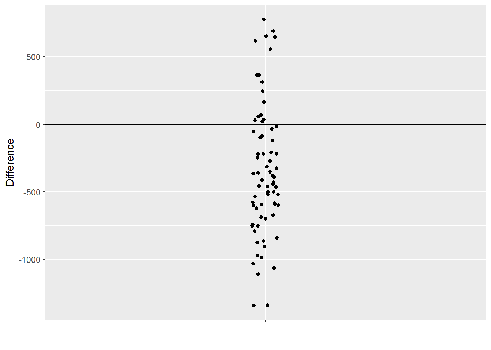
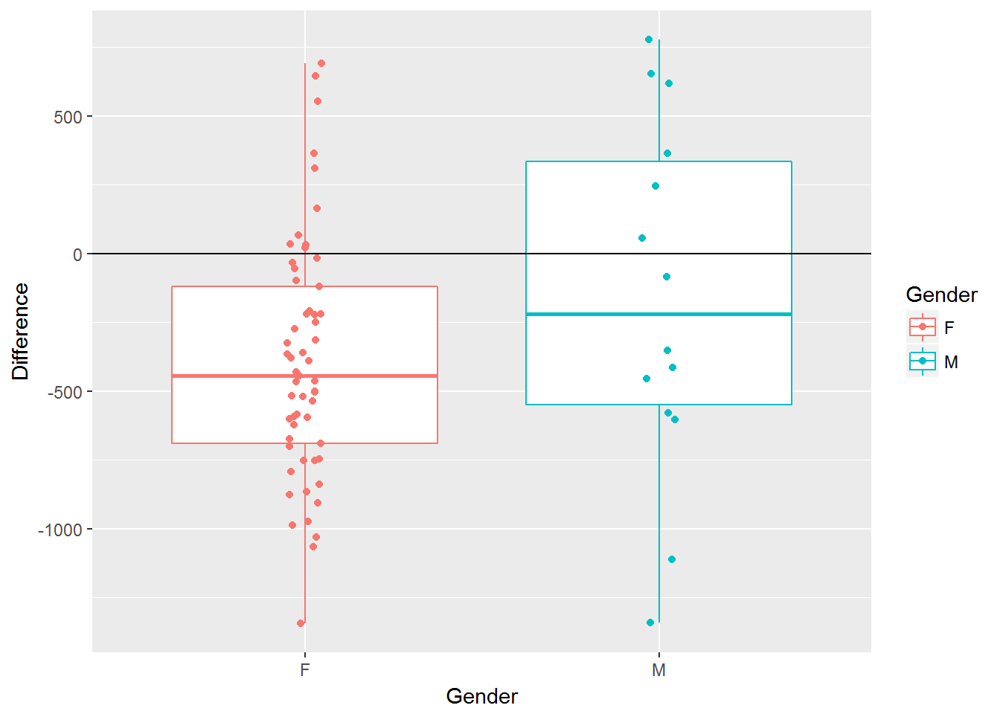
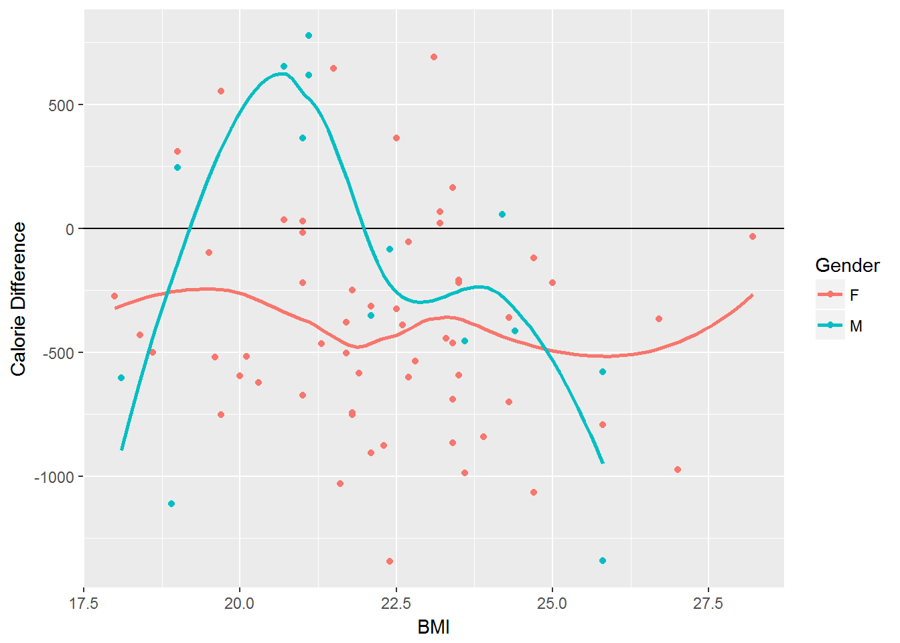
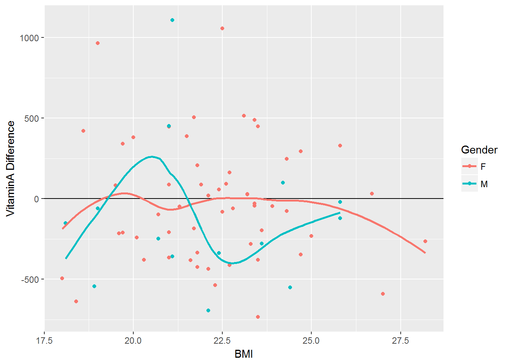
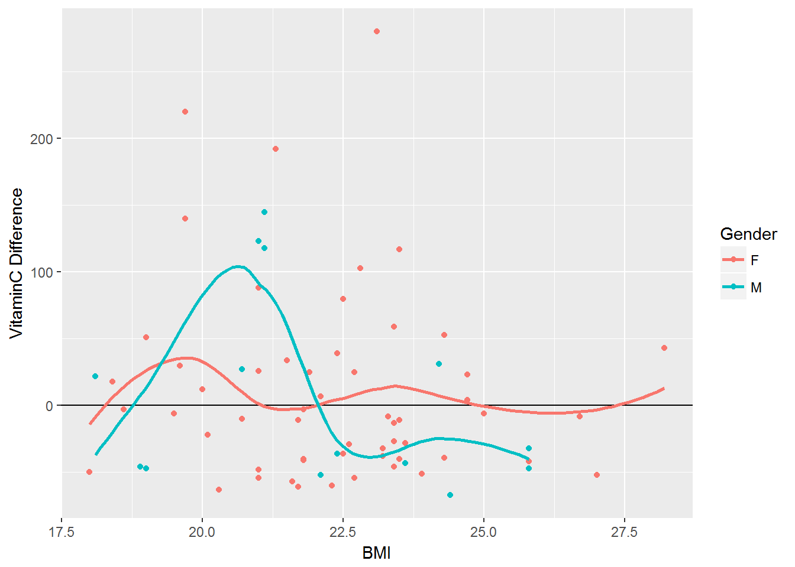
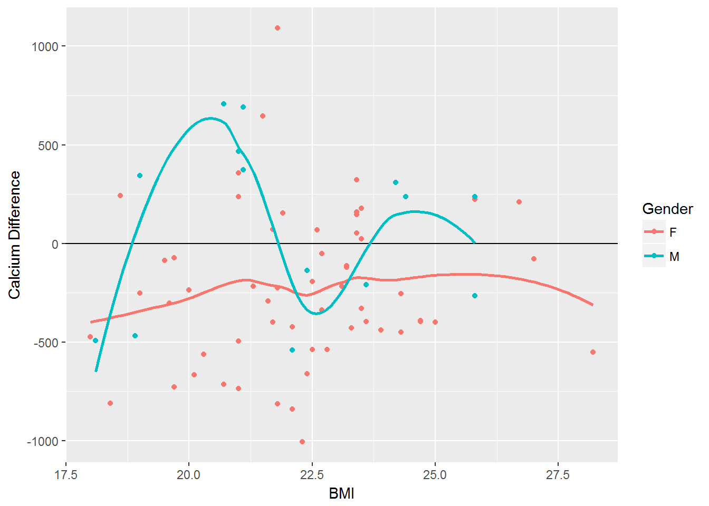
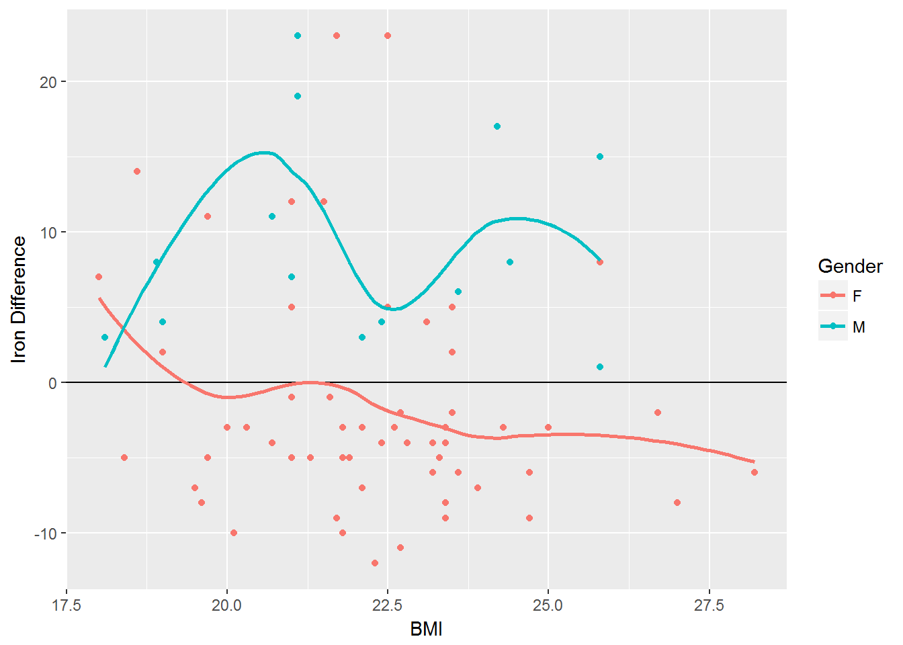
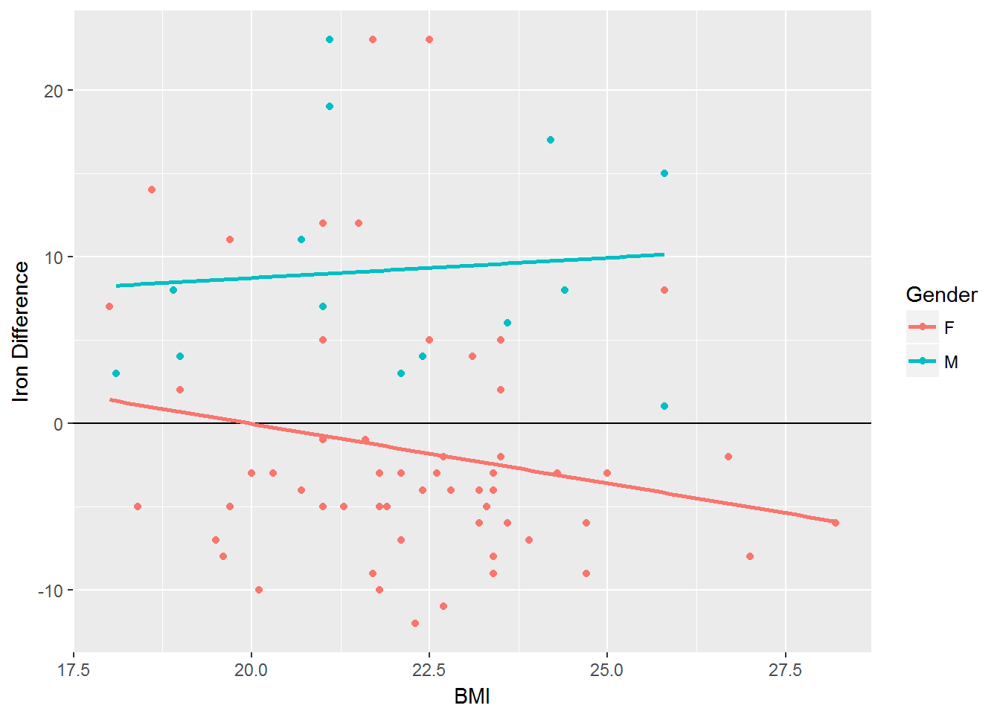

Learning Objectives
- Conducting t-tests
- Basic model fitting
This datasets contains information about actual intake and daily recommended intake for calories and various other vitamin. The relationship is to be investigated across gender and the potential impact of BMI. Each row holds information for a single person, and the columns represent:
| Column | Description |
|---|---|
| RowID | Unique row id for each person |
| Gender | Gender of person |
| BMI | Body mass index |
| <variable>_Actual | Actual amount for <variable> |
| <variable>_DRI | Daily recommended intake for <variable> |
Download Vitamin Data to Your Local Machine
Link: Data
vitamin <- read.csv('data/vitamin.csv', header=TRUE, sep=",")Using head() function to view first few rows of data.
head(vitamin)#> RowID Gender BMI Energy_Actual VitaminA_Actual VitaminC_Actual
#> 1 1 F 18.0 1330 206 15
#> 2 2 F 25.0 1792 469 59
#> 3 3 F 21.6 1211 317 18
#> 4 4 F 23.9 1072 654 24
#> 5 5 F 24.3 1534 946 118
#> 6 6 F 23.5 1893 321 35
#> Calcium_Actual Iron_Actual Energy_DRI VitaminA_DRI VitaminC_DRI
#> 1 827 22 1604 700 65
#> 2 900 12 2011 700 65
#> 3 707 7 2242 700 75
#> 4 560 11 1912 700 75
#> 5 851 12 1895 700 65
#> 6 1024 16 2114 700 75
#> Calcium_DRI Iron_DRI
#> 1 1300 15
#> 2 1300 15
#> 3 1000 8
#> 4 1000 18
#> 5 1300 15
#> 6 1000 18The initial investigation will focus on Energy (i.e. Calorie intake). The select() function from the dplyr package will be used to create a smaller data.frame from which analysis will be done.
library(dplyr)#>
#> Attaching package: 'dplyr'#> The following objects are masked from 'package:stats':
#>
#> filter, lag#> The following objects are masked from 'package:base':
#>
#> intersect, setdiff, setequal, unionvitamin_energy <- select(vitamin, RowID, Gender, BMI, Energy_Actual, Energy_DRI)The resulting vitamin_energy data.frame from the above command.
head(vitamin_energy)#> RowID Gender BMI Energy_Actual Energy_DRI
#> 1 1 F 18.0 1330 1604
#> 2 2 F 25.0 1792 2011
#> 3 3 F 21.6 1211 2242
#> 4 4 F 23.9 1072 1912
#> 5 5 F 24.3 1534 1895
#> 6 6 F 23.5 1893 2114Goal: Compare actual intake to daily recommended intake
The goal is to compare the actual intake to the daily recommended intake on an individual-by-individual level. The mutate() function will be used to obtain a difference column for each individual.
\[Difference = ( Energy\_Actual - Energy\_DRI )\]
vitamin_energy <- vitamin_energy %>% mutate('Difference' = Energy_Actual - Energy_DRI)The differences for the first few observations.
head(vitamin_energy)#> RowID Gender BMI Energy_Actual Energy_DRI Difference
#> 1 1 F 18.0 1330 1604 -274
#> 2 2 F 25.0 1792 2011 -219
#> 3 3 F 21.6 1211 2242 -1031
#> 4 4 F 23.9 1072 1912 -840
#> 5 5 F 24.3 1534 1895 -361
#> 6 6 F 23.5 1893 2114 -221Understanding the Difference Variable
What does a negative difference mean in the context of this problem?
What would a difference near 0 imply?
The following use of piping and the filter() function can be used to obtain the number of individuals that are taking in less calories than their daily recommended intake.
vitamin_energy %>% filter(Difference < 0) %>% summarize('n' = n())#> n
#> 1 55There are a total of \(71\) observations in this data.frame thus, about \(55/71 = 77\%\) of individuals in this dataset are not taking in enough calories relative to their daily recommended intake.
Using ggplot() to obtain a plot of the difference column for all individuals.
library(ggplot2)#> Warning: package 'ggplot2' was built under R version 3.3.3 ggplot(data=vitamin_energy, aes(x="",y=Difference)) + geom_jitter(width=0.03) + geom_hline(yintercept=0) + labs(x="")
Getting the basic descriptive summaries using summarize().
vitamin_energy %>% summarize('Mean Difference' = mean(Difference), 'Std'=sd(Difference), 'n'=n())#> Mean Difference Std n
#> 1 -346.0563 486.3541 71These summaries can be used to conduct the following statistical test. This test will statistically determine whether or not the average difference across all WSU students is less than zero (i.e. on average are WSU students not taking in enough calories).
\[\begin{array} {l} H_{O}: \mu_{Difference} = 0 \\ H_{A}: \mu_{Difference} < 0 \\ \end{array}\]
The test statistic for this particular statistical test is computed here.
\[\frac{(\bar{x} - \mu)}{\frac{s}{\sqrt{n}}} = \frac{(-346.1 - 0)}{\frac{486.4}{\sqrt{71}}} = -5.996\]
The apprpriate t-test can be done directly in R as follows.
t.test(vitamin_energy$Difference, mu=0, alternative=c('less'))#>
#> One Sample t-test
#>
#> data: vitamin_energy$Difference
#> t = -5.9955, df = 70, p-value = 3.99e-08
#> alternative hypothesis: true mean is less than 0
#> 95 percent confidence interval:
#> -Inf -249.8427
#> sample estimates:
#> mean of x
#> -346.0563Using ggplot() to obtain a plot of the difference column for all individuals by Gender.
ggplot(data=vitamin_energy, aes(x=Gender,y=Difference, color=Gender)) + geom_boxplot() + geom_jitter(width=0.05) + geom_hline(yintercept=0)
Getting the basic descriptive summaries using summarize() by Gender.
vitamin_energy %>% group_by(Gender) %>% summarize('Mean Difference' = mean(Difference), 'Std'=sd(Difference), 'n'=n())#> # A tibble: 2 × 4
#> Gender `Mean Difference` Std n
#> <fctr> <dbl> <dbl> <int>
#> 1 F -391.8596 432.1122 57
#> 2 M -159.5714 650.1473 14The statistical test here would be to compare the average deficiency in calorie intake across genders.
\[\begin{array} {l} H_{O}: \mu_{Difference:Females} = \mu_{Difference:Males}\\ H_{A}: \mu_{Difference:Females} \ne \mu_{Difference:Males} \\ \end{array}\]
Getting the basic descriptive summaries using summarize() by Gender.
FemaleData <- vitamin_energy %>% filter(Gender=="F") %>% select(Difference)
MaleData <- vitamin_energy %>% filter(Gender=="M") %>% select(Difference)
t.test(FemaleData, MaleData, alternative=c("two.sided"))#>
#> Welch Two Sample t-test
#>
#> data: FemaleData and MaleData
#> t = -1.2697, df = 15.93, p-value = 0.2224
#> alternative hypothesis: true difference in means is not equal to 0
#> 95 percent confidence interval:
#> -620.2472 155.6708
#> sample estimates:
#> mean of x mean of y
#> -391.8596 -159.5714Consider the following plot that allows one to understand the relationship between BMI and \((Energy\_Actual - Energy\_DRI)\) across Gender.
ggplot(data=vitamin_energy, aes(x=BMI, y=Difference, color=Gender)) + geom_point(aes(color=Gender)) + geom_hline(yintercept = 0) + geom_smooth(se=FALSE) + labs(y="Calorie Difference")#> `geom_smooth()` using method = 'loess'
Understanding Relationship between BMI and Differences
What general trends exist for female students?
What is the impact of BMI for females students?
Is the impact of BMI the same across Gender?
vitaminA_difference <- vitamin %>% mutate('Difference' = VitaminA_Actual - VitaminA_DRI)
ggplot(vitaminA_difference, aes(x=BMI, y=Difference, color=Gender)) + geom_point(aes(color=Gender)) + geom_hline(yintercept = 0) + geom_smooth(se=FALSE) + labs(y="VitaminA Difference")#> `geom_smooth()` using method = 'loess'
vitaminC_difference <- vitamin %>% mutate('Difference' = VitaminC_Actual - VitaminC_DRI)
ggplot(vitaminC_difference, aes(x=BMI, y=Difference, color=Gender)) + geom_point(aes(color=Gender)) + geom_hline(yintercept = 0) + geom_smooth(se=FALSE) + labs(y="VitaminC Difference")#> `geom_smooth()` using method = 'loess'
Calcium_difference <- vitamin %>% mutate('Difference' = Calcium_Actual - Calcium_DRI)
ggplot(Calcium_difference, aes(x=BMI, y=Difference, color=Gender)) + geom_point(aes(color=Gender)) + geom_hline(yintercept = 0) + geom_smooth(se=FALSE) + labs(y="Calcium Difference")#> `geom_smooth()` using method = 'loess'
Iron_difference <- vitamin %>% mutate('Difference' = Iron_Actual - Iron_DRI)
ggplot(Iron_difference, aes(x=BMI, y=Difference, color=Gender)) + geom_point(aes(color=Gender)) + geom_hline(yintercept = 0) + geom_smooth(se=FALSE) + labs(y="Iron Difference")#> `geom_smooth()` using method = 'loess'
The smoothing function used in these plots can be changed. For example, the following will smooth the scatterplot using a linear regression equation.
ggplot(Iron_difference, aes(x=BMI, y=Difference, color=Gender)) + geom_point(aes(color=Gender)) + geom_hline(yintercept = 0) + geom_smooth(method="lm",se=FALSE) + labs(y="Iron Difference")
The analogous linear regressio model can be fit in R as follows. The summary() function provides a summary of the resulting fit.
lmfit <- lm(Difference ~ BMI + Gender + BMI*Gender, data=Iron_difference)
summary(lmfit)#>
#> Call:
#> lm(formula = Difference ~ BMI + Gender + BMI * Gender, data = Iron_difference)
#>
#> Residuals:
#> Min 1Q Median 3Q Max
#> -10.333 -4.373 -1.792 2.457 24.809
#>
#> Coefficients:
#> Estimate Std. Error t value Pr(>|t|)
#> (Intercept) 14.2589 10.6377 1.340 0.185
#> BMI -0.7142 0.4744 -1.505 0.137
#> GenderM -10.3763 21.2704 -0.488 0.627
#> BMI:GenderM 0.9563 0.9576 0.999 0.322
#>
#> Residual standard error: 7.455 on 67 degrees of freedom
#> Multiple R-squared: 0.2824, Adjusted R-squared: 0.2503
#> F-statistic: 8.79 on 3 and 67 DF, p-value: 5.398e-05Page build on: 2017-08-15 08:36:26
Data Carpentry,
2017. License. Contributing.
Questions? Feedback?
Please file
an issue on GitHub.
On
Twitter: @datacarpentry